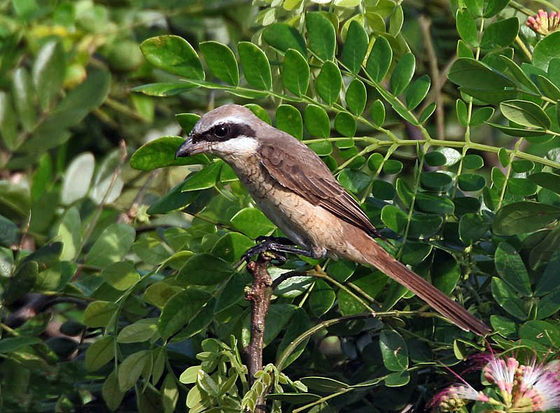

ब्राउन श्राइकBrown Shrike
Lanius cristatus · Laniidae · BRD-0146

- Scientific name वैज्ञानिक नाम
- Lanius cristatus Linnaeus, 1758
- Family कुल
- Laniidae
- Hindi हिंदी
- ब्राउन श्राइक
- Local names स्थानीय नाम
- brown shrike, bhura latora, latora, shrike
- Status here यहाँ की स्थिति
- native
- Movement आवागमन
- Winter visitor
- IUCN IUCN
- LC
- Review समीक्षा
- audited and independently read
When to look कब देखें
Winter visitor शीतकालीन प्रवासी. Expected mainly in August, September, October, November, December, January, February, March, April, May. मुख्यतः अगस्त, सितंबर, अक्टूबर, नवंबर, दिसंबर, जनवरी, फ़रवरी, मार्च, अप्रैल, मई में अपेक्षित।
Arrives in August–September from breeding grounds in Japan, China, and far eastern Russia; departs by April–May. Ali & Ripley (1968) and Handbook of the Birds of the Western Palearctic document arrival and departure timing across India. All migrants and visitors →
Uses and possibilities उपयोग और संभावनाएँ
Drawn from the documented uses in the profile below, where each is labelled traditional, current or a research lead. All uses →
Tell it apart from इनसे अलग पहचानें
ब्राउन श्राइक / Brown Shrike
Lanius cristatus Linnaeus, 1758 — Laniidae
ब्राउन श्राइक — यह छोटा शिकारी पक्षी सितंबर से अप्रैल तक पूर्वी उत्तर प्रदेश में रहता है। इसकी मोटी चोंच, काली आँख की पट्टी और लाल रंग की पीठ इसे तुरंत पहचान देते हैं। यह खुली जगहों पर बैठकर छोटी चिड़ियों, छिपकलियों और बड़े कीड़ों का शिकार करता है। यह एक आक्रामक और साहसी शिकारी है।
Quick Identification त्वरित पहचान
| Feature | Description |
|---|---|
| Size | Small shrike; 17–19 cm long |
| Crown | Greyish-buff to grey |
| Lores and eye-stripe | Black, running through eye (distinctive) |
| Back | Rufous-chestnut or rusty-brown |
| Throat and breast | White to buff-white |
| Belly | Pale buff-white |
| Tail | Dark, graduated |
| Behaviour | Perches prominently; hunts from exposed vantage |
| Call | Harsh cher-r-r and chattering |
Field tip: In open woodland and cultivation margins, look for a small shrike with a distinctive black eye-stripe and rusty-brown back, perching upright on a prominent post or branch. It hunts small birds, reptiles, and large insects. The powerful hooked bill is obvious.
हिंदी — कैसे पहचानें:
छोटा शिकारी; लाल-भूरी पीठ।
आँख पर काली पट्टी।
खुली जगहों पर बैठता है।
कठोर आवाज़।
Morphology आकारिकी
Biometrics:
| Measurement | Range |
|---|---|
| Total length | 170–190 mm |
| Wing (flattened chord) | 86–96 mm |
| Tail | 70–83 mm |
| Bill | 15–17 mm (strong, hooked) |
| Tarsus | 20–23 mm |
| Weight | 30–45 g |
Size: 17–19 cm long; wingspan 25–28 cm. Weight 30–45 g. A small but stocky shrike.
Plumage: Crown and nape greyish-buff to pale grey. Lores and a stripe through the eye jet black (sometimes extending to ear-coverts). Back rusty-chestnut, brightest in fresh plumage. Rump and upper tail-coverts pale buff or white. Throat white. Breast and underparts buff-white, sometimes with a wash of buff on flanks. Wings dark brown with paler feather edges. Tail dark, slightly graduated.
Bill: Heavy, strong, hooked tip; adapted for predatory feeding. Dark.
Legs and feet: Dark grey to black; strong.
Eyes: Dark, with distinctive black loral stripe.
Sexual dimorphism: Minimal; females slightly duller on back.
Juveniles: Duller; back less rufous; eye-stripe less distinct.
Vocalisations. Call repertoire:
- Song: A scratchy, harsh warble.; not melodious.
- Call: Harsh cher-r-r and chattering calls, given in alarm or excitement.
- Contact calls: Soft whistles between pair members.
हिंदी: नर का गान कठोर और खरखराहट जैसा है। "चेर-र-र" का उच्चारण। चिंता में तेजी से चिल्लाता है।
Behaviour & Ecology व्यवहार और पारिस्थितिकी
Predatory forager: Brown Shrike hunts small prey from exposed perches. It preys on:
- Small birds (sparrows, warblers, finches)
- Lizards and small snakes
- Large insects (grasshoppers, beetles, dragonflies)
- Occasionally small rodents
Hunting technique: Sits alertly on prominent perch, scanning for movement below. Drops swiftly on prey; kills with powerful bill. May impale prey on thorns (characteristic shrike behavior, though not always observed).
Social behaviour: Generally solitary during winter; may be seen in pairs. Territorial; males sometimes sing throughout winter.
Habitat preference: Open woodland, cultivation with scattered trees, hedgerows, gardens, parks. Prefers areas with good vantage points for hunting.
Predators: Larger raptors , may occasionally attack each other.
Boldness: Aggressive and fearless; will boldly pursue other birds; not easily frightened.
हिंदी: शिकारी पक्षी है। खुली जगहों पर बैठकर शिकार करता है। बहुत आक्रामक। छोटी चिड़ियों को मार कर खाता है।
Life Cycle / Phenology जीवन चक्र
Winter visitor: Absent during breeding season (April–July); returns to eastern UP from August and remains through May.
Arrival and departure: First birds arrive in August–September; numbers peak in January–February; departure begins in March–April, with most gone by May.
Breeding (elsewhere): Breeds in Japan, China, and far eastern Russia. Nest is a cup in tree or shrub; clutch of 4–5 eggs.
Moult: Complete moult on breeding grounds before arrival; partial moult during winter.
Roosts: Roosting in trees and bushes; solitary roosters, sometimes in pairs.
हिंदी: अगस्त में आता है, मई तक रहता है। एशिया के पूर्वी भागों में घोंसला बनाता है। सर्दी में अकेली रहती है।
Host Plants or Prey आहार
| Food Type | Examples | Feeding Behaviour |
|---|---|---|
| Small birds | Sparrows, warblers, finches | Drop from perch; kill with bill |
| Lizards | Small grass lizards, garden lizards | Capture and kill; eat whole |
| Large insects | Grasshoppers, beetles, dragonflies | Pick from ground or air; kill |
| Small snakes | Small snake species | Kill with powerful bill; eat |
हिंदी: छोटी चिड़ियाँ और छिपकलियाँ मुख्य शिकार। बड़ी मक्खियाँ और तिल्लियाँ भी खाता है। कभी-कभी छोटे सांप भी मारता है।
Predators / Natural Enemies शत्रु
- Avian predators: larger raptors, larger shrikes
- Mammalian predators: Domestic cat, snake (to eggs and nestlings on breeding grounds)
- Parasites: Blood parasites, internal helminths
हिंदी: बड़ी बाजें इसका शिकार करती हैं। बिल्ली भी खतरनाक हो सकती है।
Agricultural / Human Relevance कृषि प्रासंगिकता
Protected species: All wild birds in India are protected under the Wildlife (Protection) Act 1972 (Schedule IV, amended 2022). Hunting is prohibited.
Pest control: Hunts grasshoppers, beetles, and large insects, providing natural pest control benefit in agricultural areas and gardens.
Impact on other birds: As a predator of small birds, it may affect populations of sparrows and other small songbirds, but this is a natural ecological relationship.
Cultural relevance: Known from classical ornithological records. Mentioned in Mughal and historical hunting records of the region.
Scientific value: Population monitoring important for understanding predator-prey dynamics and bird community composition.
हिंदी: वन्यजीव संरक्षण अधिनियम 1972 के अनुसूची IV के अंतर्गत पूरी तरह संरक्षित है। इसका शिकार निषिद्ध है।
Expected Locally स्थानीय रूप से अपेक्षित
Not a field record. Written from published accounts for eastern Uttar Pradesh. No confirmed local sighting yet — if you have seen it, that is what the atlas needs.
अभी तक स्थानीय पुष्टि नहीं। यह विवरण प्रकाशित स्रोतों से है, किसी अवलोकन से नहीं।
Winter range: Expected in eastern Uttar Pradesh from August to May, particularly in open woodland and cultivated areas with scattered trees in Basti and Ayodhya districts. Published handbooks document this species as a regular winter visitor across northern India.
Habitat preference: Open woodland, cultivation with scattered trees, hedgerows, gardens, parks with good vantage points.
Peak occurrence: January–February, when populations from far eastern breeding grounds are settled.
Nearest published record: Handbook of the Birds of India and the Western Palearctic document this species as a winter visitor throughout northern India. Its conspicuous habits make it recognizable.
What a first record would be: A dated photograph showing the bird clearly in a specific location (with GPS coordinates and date), such as perched on a branch or hunting, submitted through the About page.
हिंदी: यह पक्षी स्थानीय रूप से अपेक्षित है, न कि देखे गए बतौर प्रेक्षण। अगस्त से अप्रैल तक खेतों और खुली जगहों में देखे जाने चाहिए। पहला रिकॉर्ड के लिए स्पष्ट फोटोग्राफ और तारीख चाहिए।
Distribution वितरण
Global range: Breeding range in Japan, China, and far eastern Russia. Winters widely across Asia, including India, Southeast Asia, and down to the Philippines.
In India: Distributed across the Indian subcontinent as a winter visitor (August–May). Occurs from the Himalayas south to the Deccan.
In Uttar Pradesh: Widespread in winter in suitable habitat, particularly in cultivated areas and open woodland of the plains.
In Basti district / eastern UP: Regular winter visitor in open cultivation and gardens; expected on range grounds rather than confirmed in local surveys.
Research Questions शोध प्रश्न
- What are the exact breeding grounds and wintering grounds of Brown Shrike populations in eastern UP? Do different populations winter in different parts?
- How does prey availability (particularly grasshoppers and small birds) influence Brown Shrike distribution during winter?
- What is the impact of Brown Shrike predation on small bird populations in eastern UP during winter?
- क्या खेतों में कीटनाशकों के उपयोग से इस शिकारी के शिकार में बदलाव हुआ है?
- How do individual Brown Shrikes establish and maintain hunting territories during winter? (A child can track individual birds and map their territories over the season.)
- क्या इस पक्षी के आने-जाने के समय में जलवायु परिवर्तन का असर दिख रहा है?
Similar Species मिलती-जुलती प्रजातियाँ
| Species | Key Difference | Hindi | Field Rule | |
|---|---|---|---|---|
| Isabelline Shrike (Lanius isabellinus) | Paler sandy-grey above with a rufous tail; winter visitor to drier country | इसाबेलाइन श्राइक | Red-tailed shows a bright red tail; Brown Shrike has dark tail. | |
| Bay-backed Shrike (Lanius vittatus) | Smaller; grey crown, chestnut back, white wing patch; resident | बे-बैक्ड श्राइक | Bay-backed shows slate-grey (not rufous) back. | |
| [[long_tailed_shrike\ | Long-tailed Shrike]] (Lanius schach) | Larger; grey crown and mantle, long black tail, rufous flanks; resident all year | लटोरा | Long-tailed is grey-backed and long-tailed; Brown is small and all rufous-brown above |
Field rule: Brown Shrike shows a rusty-chestnut back with a black eye-stripe and white underparts. If the tail is rufous on a pale sandy bird, it is an Isabelline Shrike. If the back is dark slate-grey, it is a different species.
Taxonomy & Classification वर्गीकरण
Original description. The species was described by Carl Linnaeus in 1758 in Systema Naturae, as Lanius cristatus. Type locality is Japan.
Subspecies. Multiple subspecies recognized; L. c. cristatus is the form wintering in the Indian subcontinent.
Family and order placement. Order Passeriformes; family Laniidae (shrikes). The genus Lanius contains true shrikes, characterized by hooked bills and predatory feeding.
Phylogenetic notes. Molecular work has placed shrikes in a well-defined clade within the passerines, distinct from flycatchers.
IUCN status rationale. Assessed as Least Concern (LC) globally. Populations are stable and widely distributed. The species is adaptable to human-modified habitats. In India, it is protected under the Wildlife (Protection) Act 1972 (Schedule IV).
हिंदी: यह एशिया के कई हिस्सों में पाया जाता है। भारत में सर्दियों में आता है। पूरी तरह सुरक्षित है।
Photo Gallery फोटो गैलरी
No photos yet — add field photos to media/species/brown_shrike/ and run node scripts/sync_photos.js.
Wanted photos:
- Bird perched on prominent post or branch
- Showing rusty back and black eye-stripe
- Hunting or with prey
- In typical open habitat
- Close-up of head and hooked bill
References संदर्भ
- Linnaeus, C. (1758). Systema Naturae per Regna Tria Naturae (10th edn). Laurentii Salvii, Holmiae. Vol. 1, p. 95.
- Ali, S. & Ripley, S. D. (1973). Handbook of the Birds of India and Pakistan. Vol. 4 (Waxwings to Whydahs). Oxford University Press, Delhi. Pp. 224–226.
- Cramp, S. & Perrins, C. M. (1993). Handbook of the Birds of Europe, the Middle East and North Africa: The Birds of the Western Palearctic. Vol. 8 (Crows to Finches). Oxford University Press. Pp. 51–58.
- Grimmett, R., Inskipp, C. & Inskipp, T. (2011). Birds of the Indian Subcontinent (2nd edn). Oxford University Press, Delhi. P. 334.
- GBIF Occurrence Data — Lanius cristatus, India.
- IUCN Red List (2023). Lanius cristatus — BirdLife International assessment. IUCN, Cambridge. Status: Least Concern.
Source file: species/fauna/birds/brown_shrike.md